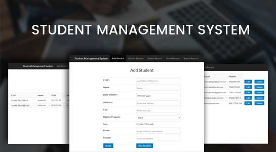

Some Glimps Of Our Web
An online Database for CSE students to Keep Their Records Safe

.....................
Here in this website every admin can keep the details of every student he/she wants. Our website has made it very easy to access and use for admins so that they will not face any issue later.
How a Admin Can Store Detail Of Any Student He/She Wants To...??
Just Follow Some Basic Steps..
1) You Need To Login In our Website.
2) You Will Be directed To Your Admin Page.
3) There You Will Find Options To Add, Modify And Delete Records Of Any Student.
4) Just Select The Option And Complete it.
5) After That You Need To logout.
6) If Someone Dont Have Login Id And Pass Then he/she Needs To Contact Us We Will Provide The Id And Pass After Verification.